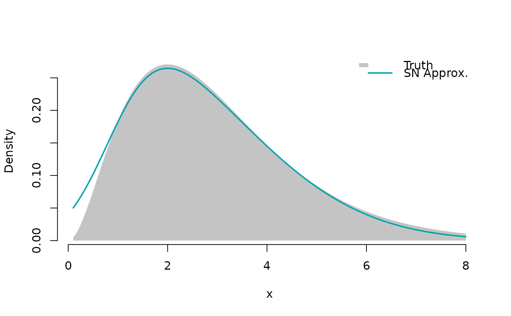

Fit a skew normal distribution to log-density evaluations
Source:R/skew-normal.R
fit_skew_normal.RdFit a skew normal distribution to log-density evaluations
Arguments
- x
A numeric vector of points where the density is evaluated.
- y
A numeric vector of log-density evaluations at points x.
- threshold_log_drop
A negative numeric value indicating the log-density drop threshold below which points are ignored in the fitting. Default is -6.
- temp
A numeric value for the temperature parameter k. If NA (default), it is included in the optimisation.
Value
A list with fitted parameters:
xi: location parameteromega: scale parameteralpha: shape parameterlogC: log-normalization constantk: temperature parameterrsq: R-squared of the fit
Note that logC and k are not used when fitting from a sample.
Details
This skew normal fitting function uses a weighted least squares
approach to fit the log-density evaluations provided in y at points x.
The weights are set to be the density evaluations raised to the power of
the temperature parameter k. This has somewhat an interpretation of
finding the skew normal fit that minimises the Kullback-Leibler divergence
from the true density to it.
In R-INLA, the C code implementation from which this was translated from can be found here.
Examples
library(sn)
#> Loading required package: stats4
#>
#> Attaching package: ‘sn’
#> The following object is masked from ‘package:stats’:
#>
#> sd
library(tidyr)
library(ggplot2)
logdens <- function(x) dgamma(x, shape = 3, rate = 1, log = TRUE)
x_grid <- seq(0.1, 8, length.out = 21)
y_log <- sapply(x_grid, logdens)
y_log <- y_log - max(y_log) # normalise to have maximum at zero
res <- fit_skew_normal(x_grid, y_log, temp = 10)
unlist(res)
#> xi omega alpha logC k rmse
#> 0.842445393 2.539226101 3.310505376 1.332422700 10.000000000 0.002109188
#> nmad
#> 0.173298470
plot_df <-
pivot_longer(
tibble(
x = seq(0.1, 8, length.out = 200),
truth = exp(logdens(x)),
approx = dsnorm(x, xi = res$xi, omega = res$omega, alpha = res$alpha)
),
cols = c("truth", "approx"),
names_to = "type",
values_to = "density"
)
ggplot() +
# truth as filled area
geom_area(
data = subset(plot_df, type == "truth"),
aes(x, density, fill = "Truth"),
alpha = 0.38
) +
# approx as blue line
geom_line(
data = subset(plot_df, type == "approx"),
aes(x = x, y = density, col = "SN Approx."),
linewidth = 1
) +
scale_fill_manual(name = NULL, values = "#131516") +
scale_colour_manual(name = NULL, values = "#00A6AA") +
theme_minimal() +
theme(legend.position = "top")
